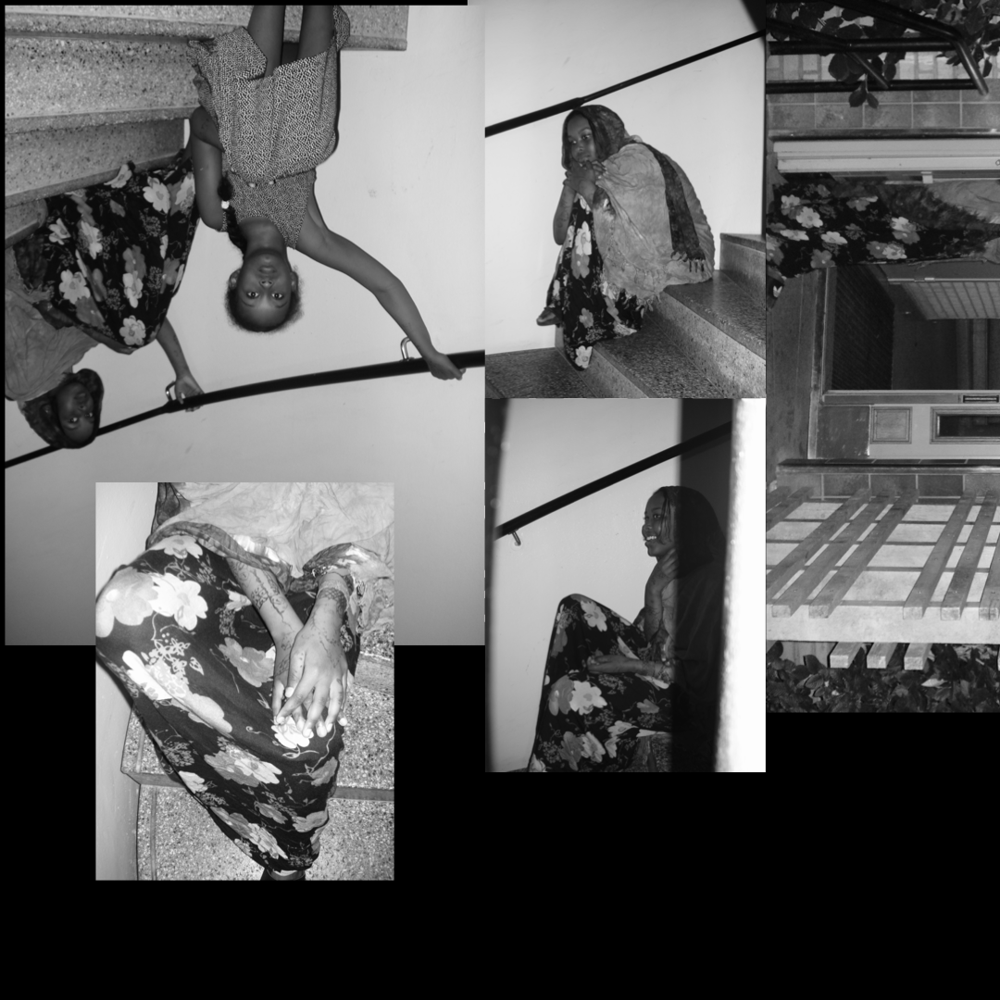

Project 1: Adolescent
This project was focused on creating a photo collage that explores themes of displacement, identity, and emotional depth. The layered images depict a subject navigating staircases, symbolizing movement—whether forward or trapped in cycles.
← Back to Projects